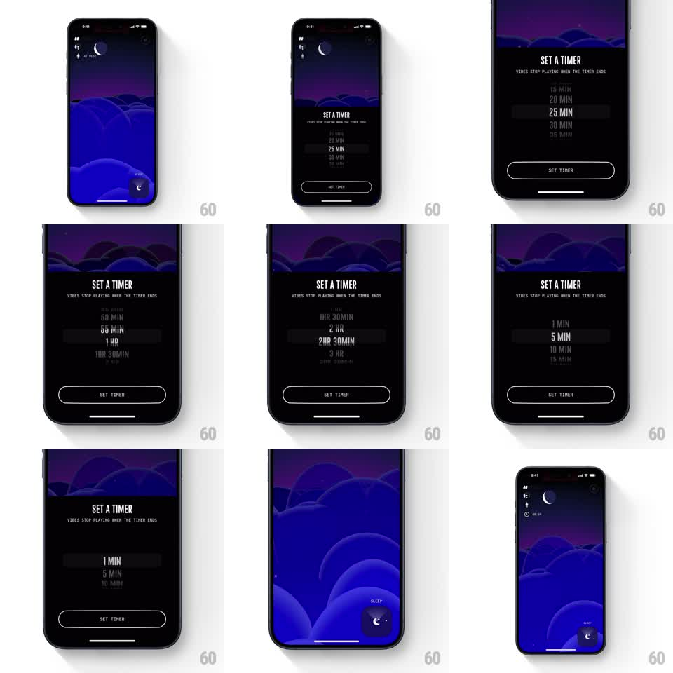

Media
Frame-by-frame

Rebuild this interaction 1:1: Not Boring Vibes' sleep timer - a "SET A TIMER" sheet rises over the cloudscape with a bold vertical wheel picker of durations, and dismisses with a swift downward slide, leaving a countdown chip on the sleep button.

Rebuild this interaction 1:1: Not Boring Vibes' sleep timer - a "SET A TIMER" sheet rises over the cloudscape with a bold vertical wheel picker of durations, and dismisses with a swift downward slide, leaving a countdown chip on the sleep button.
## Integration
Integration: stack-agnostic spec - springs given as stiffness/damping, timed motions as duration + curve; map every value to your framework and animation library of choice.
## Scene
The night cloudscape. The sheet: black, covering most of the screen, cloudscape visible as a strip at top; condensed "SET A TIMER" title with the line "Vibes stop playing when the timer ends"; a vertical wheel picker (1 MIN through 3 HR in mixed units, center value large and white, neighbors dimmed); an outlined "SET TIMER" pill at the bottom.
## Motion spec
Pattern: rising sheet with inertial wheel picker.
- Tap the timer control: the sheet slides up (spring stiffness ~300, damping ~30), the cloudscape compressing to a top strip.
- The wheel spins with vertical drag, inertial on release, snapping to the nearest value (spring stiffness ~400, damping ~28); the settled value scales up and whitens, neighbors dimming to ~30% opacity with a slight blur illusion via size.
- Each snap tick fires a subtle haptic-style pulse.
- Tap SET TIMER: the button flashes (100ms), the sheet slides down fast (250ms, ease-in), and the sleep button gains a small countdown chip (e.g. "00:44") that fades in (200ms).
- Reopening the sheet restores the wheel at the active value.
## Calibration
- Wheel values span minutes into hours with mixed formatting ("25 MIN", "1 HR", "2HR 30MIN") - keep the unit typography compact.
- The dismiss is faster than the entrance; setting a timer should feel like flicking something away.
## Reduced motion
Sheet fades in and out; wheel snaps without inertia.
## Don't miss
- The selected value is dramatically larger and brighter than its neighbors - the wheel reads at arm's length.
- The countdown chip appears on the sleep button itself, not as a separate banner.